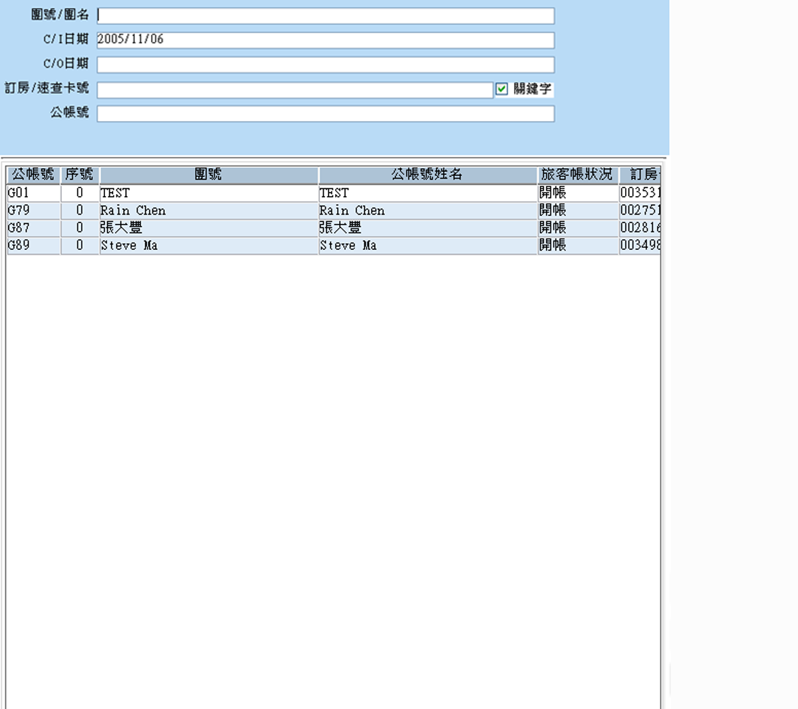

<div class="trace">
	<div class="page-header">
	</div><!-- /.page-header -->

	<div class="col-xs-12">
		<div class="row">
			<div class="col-xs-12">
				<div class="row search-content">

					<div class="search-co">
						<div class="search-co-h">
							<i class="ace-icon fa fa-search search-icon"></i>
							<span>搜尋</span>
							<div class="row search-right-btn">
								<div class="right-btn-menu-co">
									<ul>
										<li>
											<i class="fa fa-angle-down show-search-detail fa-lg"></i>
										</li>
									</ul>
								</div>
							</div> <!-- /.search-right-btn -->
						</div>
						<div class="row">
							<div class="search-co-content col-xs-12">
								<div class="col-sm-4">
									<div class="block-table">
										<label>交辦事項日期</label>
										<input type="text"/>
									</div>
								</div>
							</div>
							<div class="search-co-content col-xs-12 rece-search-detail" style="display:none;">
								<div class="col-sm-4">
									<div class="block-table">
										<label>訂房卡號</label>
										<input type="text"/>
									</div>
								</div> <!-- /.col-sm-4 -->
								<div class="col-sm-8">
									<!--<div class="col-sm-12">-->
									<div class="col-sm-6">

										<div class="block-table">
											<form class="form-inline">
												<label>處理部門</label>
												<input type="text"/>
												<label class="inline more-Word">
													<button>...</button>
												</label>
											</form>
										</div>
										<!--<div class="block-table">-->
										<!--<div class="input-group">-->
										<!--<input type="text" class="form-control search-query" placeholder="Type your query" />-->
										<!--<span class="input-group-addon">-->
										<!--<i class="ace-icon fa fa-check"></i>-->
										<!--</span>-->
										<!--</div>-->
										<!--</div>-->
									</div> <!-- /.col-sm-6 -->

									<div class="col-sm-6">

										<div class="block-table">
											<label>公帳號</label>
											<input type="text"/>
										</div>


									</div> <!-- /col-sm-6 -->
								</div>
							</div>
						</div> <!-- row-->
						<div class="row search-footer-btn">
							<div class="footer-btn-menu-co">
								<ul>
									<li>
										<!-- 寫法02 -->
										<div class="" data-rel="tooltip" data-placement="bottom" title="查詢"
											 style="padding: 0 0 5px 0;">
											<div class="icon-reStyle icon-co-14"></div>
										</div>
									</li>
									<li>

										<div class="" data-rel="tooltip" data-placement="bottom"
											 title="清除查詢" style="padding: 0 0 5px 0;">
											<div class="icon-reStyle icon-co-11"></div>
										</div>

									</li>
								</ul>
							</div>  <!-- /.footer-btn-menu-co -->
						</div> <!-- /.search-footer-btn -->

					</div> <!-- /.search-co -->

				</div> <!-- /.row  search-content-->

			</div> <!-- /.col-sm-12 -->
		</div> <!-- /.row -->
	</div><!-- /.col-xs-12 -->
	<div class="col-xs-12">
		<div class="row">
			<div class="col-xs-12">
				<div class="row">
					<div class="col-xs-12 col-sm-11">
						<div class="row">
							<div class="jqGridEdit-table">
								<table id="groupList-table"></table>
							</div>
							<!--<a href="#">-->
							<!---->
							<!--</a>-->
						</div>
					</div>
					<div class="col-xs-12 col-sm-1">
						<div class="row">
							<div class="right-menu-co">
								<ul>
									<!--<li class="icon-co-01">-->
									<li>
										<!---->
										<a href="#trace-modal-01" data-toggle="modal" style="cursor: pointer;">
											<div class="icon-co-14"></div>
										</a>
										<span>新增</span>
									</li>
									<li>
										<div class="icon-co-14"></div>
										<span>刪除</span>
									</li>
									<li>
										<div class="icon-co-14"></div>
										<span>存檔</span>
									</li>
									<li>
										<div class="icon-co-14"></div>
										<span>已處理</span>
									</li>

								</ul>
							</div>
						</div>
					</div>
				</div>
			</div><!-- /.col-xs-12 -->
		</div>
	</div><!-- /.col-xs-12 -->

	<div id="trace-modal-01" class="modal fade" tabindex="-1">
		<div class="modal-dialog modal-dialog-fullScreen-blockSet" style="max-width: 100%; ">
			<div class="modal-content">
				<div class="modal-header">
					<button type="button" class="close" data-dismiss="modal"
							aria-hidden="true">&times;</button>
					<!--<h3 class="smaller lighter blue no-margin">應收總合計:4500</h3>-->
				</div>

				<div class="modal-body">
					<a href="#" data-toggle="modal">
						
					</a>
				</div>
			</div><!-- /.modal-content -->
		</div><!-- /.modal-dialog -->


	</div>
</div><!-- /.trace -->
<!-- page specific plugin scripts -->
<script src="../components/bootstrap-datepicker/dist/js/bootstrap-datepicker.js"></script>
<script src="../components/jqGrid/js/jquery.jqGrid.js"></script>
<script src="../components/jqGrid/js/i18n/grid.locale-en.js"></script>
<!-- inline scripts related to this page -->
<script type="text/javascript">

	var grid_data =
			[
				{id: "601", name: "國際獅子會第八專區", startDate: "2016-05-25", endDate: "2016-05-27", note: "123"},
				{id: "102", name: "蕭亨明", startDate: "2016-05-25", endDate: "2016-05-27", note: "Long text "},
				{id: "521", name: "黃小芷", startDate: "2016-05-25", endDate: "2016-05-27", note: "Long text "},
				{id: "025", name: "王大維", startDate: "2016-05-25", endDate: "2016-05-27", note: "Long text "},
				{id: "103", name: "陳大雄", startDate: "2016-05-25", endDate: "2016-05-27", note: "Long text "},

				{id: "601", name: "國際獅子會第八專區", startDate: "2016-05-25", endDate: "2016-05-27", note: "123"},
				{id: "102", name: "蕭亨明", startDate: "2016-05-25", endDate: "2016-05-27", note: "Long text "},
				{id: "521", name: "黃小芷", startDate: "2016-05-25", endDate: "2016-05-27", note: "Long text "},
				{id: "025", name: "王大維", startDate: "2016-05-25", endDate: "2016-05-27", note: "Long text "},
				{id: "103", name: "陳大雄", startDate: "2016-05-25", endDate: "2016-05-27", note: "Long text "},

				{id: "601", name: "國際獅子會第八專區", startDate: "2016-05-25", endDate: "2016-05-27", note: "123"},
				{id: "102", name: "蕭亨明", startDate: "2016-05-25", endDate: "2016-05-27", note: "Long text "},
				{id: "521", name: "黃小芷", startDate: "2016-05-25", endDate: "2016-05-27", note: "Long text "},
				{id: "025", name: "王大維", startDate: "2016-05-25", endDate: "2016-05-27", note: "Long text "},
				{id: "103", name: "陳大雄", startDate: "2016-05-25", endDate: "2016-05-27", note: "Long text "},

				{id: "601", name: "國際獅子會第八專區", startDate: "2016-05-25", endDate: "2016-05-27", note: "123"},
				{id: "102", name: "蕭亨明", startDate: "2016-05-25", endDate: "2016-05-27", note: "Long text "},
				{id: "521", name: "黃小芷", startDate: "2016-05-25", endDate: "2016-05-27", note: "Long text "},
				{id: "025", name: "王大維", startDate: "2016-05-25", endDate: "2016-05-27", note: "Long text "},
				{id: "103", name: "陳大雄", startDate: "2016-05-25", endDate: "2016-05-27", note: "Long text "},

				{id: "601", name: "國際獅子會第八專區", startDate: "2016-05-25", endDate: "2016-05-27", note: "123"},
				{id: "102", name: "蕭亨明", startDate: "2016-05-25", endDate: "2016-05-27", note: "Long text "},
				{id: "521", name: "黃小芷", startDate: "2016-05-25", endDate: "2016-05-27", note: "Long text "},
				{id: "025", name: "王大維", startDate: "2016-05-25", endDate: "2016-05-27", note: "Long text "},
				{id: "103", name: "陳大雄", startDate: "2016-05-25", endDate: "2016-05-27", note: "Long text "},

				{id: "601", name: "國際獅子會第八專區", startDate: "2016-05-25", endDate: "2016-05-27", note: "123"},
				{id: "102", name: "蕭亨明", startDate: "2016-05-25", endDate: "2016-05-27", note: "Long text "},
				{id: "521", name: "黃小芷", startDate: "2016-05-25", endDate: "2016-05-27", note: "Long text "},
				{id: "025", name: "王大維", startDate: "2016-05-25", endDate: "2016-05-27", note: "Long text "},
				{id: "103", name: "陳大雄", startDate: "2016-05-25", endDate: "2016-05-27", note: "Long text "},

			];

	var subgrid_data =
			[
				{id: "1", name: "sub grid item 1", qty: 11},
				{id: "2", name: "sub grid item 2", qty: 3},
				{id: "3", name: "sub grid item 3", qty: 12},
				{id: "4", name: "sub grid item 4", qty: 5},
				{id: "5", name: "sub grid item 5", qty: 2},
				{id: "6", name: "sub grid item 6", qty: 9},
				{id: "7", name: "sub grid item 7", qty: 3},
				{id: "8", name: "sub grid item 8", qty: 8}
			];

	jQuery(function ($) {
		var grid_selector = "#groupList-table";
		var pager_selector = "#grid-pager";


		var parent_column = $(grid_selector).closest('[class*="col-"]');
		//resize to fit page size
		$(window).on('resize.jqGrid', function () {
			$(grid_selector).jqGrid('setGridWidth', parent_column.width());
		})

		//resize on sidebar collapse/expand
		$(document).on('settings.ace.jqGrid', function (ev, event_name, collapsed) {
			if (event_name === 'sidebar_collapsed' || event_name === 'main_container_fixed') {
				//setTimeout is for webkit only to give time for DOM changes and then redraw!!!
				setTimeout(function () {
					$(grid_selector).jqGrid('setGridWidth', parent_column.width());
				}, 20);
			}
		})

		//if your grid is inside another element, for example a tab pane, you should use its parent's width:
		/**
		 $(window).on('resize.jqGrid', function () {
					var parent_width = $(grid_selector).closest('.tab-pane').width();
					$(grid_selector).jqGrid( 'setGridWidth', parent_width );
				})
		 //and also set width when tab pane becomes visible
		 $('#myTab a[data-toggle="tab"]').on('shown.bs.tab', function (e) {
				  if($(e.target).attr('href') == '#mygrid') {
					var parent_width = $(grid_selector).closest('.tab-pane').width();
					$(grid_selector).jqGrid( 'setGridWidth', parent_width );
				  }
				})
		 */


		jQuery(grid_selector).jqGrid({
			//direction: "rtl",

			//subgrid options
//					subGrid : true,
			//subGridModel: [{ name : ['No','Item Name','Qty'], width : [55,200,80] }],
			//datatype: "xml",
			subGridOptions: {
				plusicon: "ace-icon fa fa-plus center bigger-110 blue",
				minusicon: "ace-icon fa fa-minus center bigger-110 blue",
				openicon: "ace-icon fa fa-chevron-right center orange"
			},
			//for this example we are using local data
			subGridRowExpanded: function (subgridDivId, rowId) {
				var subgridTableId = subgridDivId + "_t";
				$("#" + subgridDivId).html("<table id='" + subgridTableId + "'></table>");
				$("#" + subgridTableId).jqGrid({
					datatype: 'local',
					data: subgrid_data,
					colNames: ['No', 'Item Name', 'Qty'],
					colModel: [
						{name: 'id', width: 50},
						{name: 'name', width: 150},
						{name: 'qty', width: 50}
					]
				});
			},


			data: grid_data,
			datatype: "local",
			height: 500,
			colNames: ['房號', '姓名', '開始日期', '結束日期', '交辦事項內容'],
			colModel: [
//						{name:'myac',index:'', width:80, fixed:true, sortable:false, resize:false,
//							formatter:'actions',
//							formatoptions:{
//								keys:true,
//								//delbutton: false,//disable delete button
//
//								delOptions:{recreateForm: true, beforeShowForm:beforeDeleteCallback},
//								//editformbutton:true, editOptions:{recreateForm: true, beforeShowForm:beforeEditCallback}
//							}
//						},
				{name: 'id', index: 'id', width: 60, sorttype: "int", editable: true},
				{name: 'name', index: 'name', width: 150, editable: true, editoptions: {size: "20", maxlength: "30"}},
				{name:'startDate',index:'startDate',width:90, editable:true, sorttype:"date",unformat: pickDate},
				{name:'endDate',index:'endDate',width:90, editable:true, sorttype:"date",unformat: pickDate},
				{
					name: 'note',
					index: 'note',
					width: 150,
					sortable: false,
					editable: true,
					edittype: "textarea",
					editoptions: {rows: "2", cols: "10"}
				},

			],

			viewrecords: true,
			//控制顯示數量
			rowNum: -1,
			rowList: [10, 20, 30],
			pager: pager_selector,
			altRows: true,
			//toppager: true,

			// false讓checkbox 消失
			multiselect: false,
			//multikey: "ctrlKey",
			multiboxonly: true,

			loadComplete: function () {
				var table = this;
				setTimeout(function () {
					styleCheckbox(table);

					updateActionIcons(table);
					updatePagerIcons(table);
					enableTooltips(table);
				}, 0);
			},

			editurl: "../dummy.php",//nothing is saved
//					caption: "jqGrid with inline editing"

			//,autowidth: true,


			/**
			 ,
			 grouping:true,
			 groupingView : {
						 groupField : ['name'],
						 groupDataSorted : true,
						 plusicon : 'fa fa-chevron-down bigger-110',
						 minusicon : 'fa fa-chevron-up bigger-110'
					},
			 caption: "Grouping"
			 */

		});
		$(window).triggerHandler('resize.jqGrid');//trigger window resize to make the grid get the correct size


		//enable search/filter toolbar
		//jQuery(grid_selector).jqGrid('filterToolbar',{defaultSearch:true,stringResult:true})
		//jQuery(grid_selector).filterToolbar({});


		//switch element when editing inline
		function aceSwitch(cellvalue, options, cell) {
			setTimeout(function () {
				$(cell).find('input[type=checkbox]')
						.addClass('ace ace-switch ace-switch-5')
						.after('<span class="lbl"></span>');
			}, 0);
		}

		//enable datepicker
		function pickDate(cellvalue, options, cell) {
			setTimeout(function () {
				$(cell).find('input[type=text]')
						.datepicker({format: 'yyyy-mm-dd', autoclose: true});
			}, 0);
		}


		//navButtons
		jQuery(grid_selector).jqGrid('navGrid', pager_selector,
				{ 	//navbar options
					edit: true,
					editicon: 'ace-icon fa fa-pencil blue',
					add: true,
					addicon: 'ace-icon fa fa-plus-circle purple',
					del: true,
					delicon: 'ace-icon fa fa-trash-o red',
					search: true,
					searchicon: 'ace-icon fa fa-search orange',
					refresh: true,
					refreshicon: 'ace-icon fa fa-refresh green',
					view: true,
					viewicon: 'ace-icon fa fa-search-plus grey',
				},
				{
					//edit record form
					//closeAfterEdit: true,
					//width: 700,
					recreateForm: true,
					beforeShowForm: function (e) {
						var form = $(e[0]);
						form.closest('.ui-jqdialog').find('.ui-jqdialog-titlebar').wrapInner('<div class="widget-header" />')
						style_edit_form(form);
					}
				},
				{
					//new record form
					//width: 700,
					closeAfterAdd: true,
					recreateForm: true,
					viewPagerButtons: false,
					beforeShowForm: function (e) {
						var form = $(e[0]);
						form.closest('.ui-jqdialog').find('.ui-jqdialog-titlebar')
								.wrapInner('<div class="widget-header" />')
						style_edit_form(form);
					}
				},
				{
					//delete record form
					recreateForm: true,
					beforeShowForm: function (e) {
						var form = $(e[0]);
						if (form.data('styled')) return false;

						form.closest('.ui-jqdialog').find('.ui-jqdialog-titlebar').wrapInner('<div class="widget-header" />')
						style_delete_form(form);

						form.data('styled', true);
					},
					onClick: function (e) {
						//alert(1);
					}
				},
				{
					//search form
					recreateForm: true,
					afterShowSearch: function (e) {
						var form = $(e[0]);
						form.closest('.ui-jqdialog').find('.ui-jqdialog-title').wrap('<div class="widget-header" />')
						style_search_form(form);
					},
					afterRedraw: function () {
						style_search_filters($(this));
					}
					,
					multipleSearch: true,
					/**
					 multipleGroup:true,
					 showQuery: true
					 */
				},
				{
					//view record form
					recreateForm: true,
					beforeShowForm: function (e) {
						var form = $(e[0]);
						form.closest('.ui-jqdialog').find('.ui-jqdialog-title').wrap('<div class="widget-header" />')
					}
				}
		)


		function style_edit_form(form) {
			//enable datepicker on "sdate" field and switches for "stock" field
			form.find('input[name=sdate]').datepicker({format: 'yyyy-mm-dd', autoclose: true})

			form.find('input[name=stock]').addClass('ace ace-switch ace-switch-5').after('<span class="lbl"></span>');
			//don't wrap inside a label element, the checkbox value won't be submitted (POST'ed)
			//.addClass('ace ace-switch ace-switch-5').wrap('<label class="inline" />').after('<span class="lbl"></span>');


			//update buttons classes
			var buttons = form.next().find('.EditButton .fm-button');
			buttons.addClass('btn btn-sm').find('[class*="-icon"]').hide();//ui-icon, s-icon
			buttons.eq(0).addClass('btn-primary').prepend('<i class="ace-icon fa fa-check"></i>');
			buttons.eq(1).prepend('<i class="ace-icon fa fa-times"></i>')

			buttons = form.next().find('.navButton a');
			buttons.find('.ui-icon').hide();
			buttons.eq(0).append('<i class="ace-icon fa fa-chevron-left"></i>');
			buttons.eq(1).append('<i class="ace-icon fa fa-chevron-right"></i>');
		}

		function style_delete_form(form) {
			var buttons = form.next().find('.EditButton .fm-button');
			buttons.addClass('btn btn-sm btn-white btn-round').find('[class*="-icon"]').hide();//ui-icon, s-icon
			buttons.eq(0).addClass('btn-danger').prepend('<i class="ace-icon fa fa-trash-o"></i>');
			buttons.eq(1).addClass('btn-default').prepend('<i class="ace-icon fa fa-times"></i>')
		}

		function style_search_filters(form) {
			form.find('.delete-rule').val('X');
			form.find('.add-rule').addClass('btn btn-xs btn-primary');
			form.find('.add-group').addClass('btn btn-xs btn-success');
			form.find('.delete-group').addClass('btn btn-xs btn-danger');
		}

		function style_search_form(form) {
			var dialog = form.closest('.ui-jqdialog');
			var buttons = dialog.find('.EditTable')
			buttons.find('.EditButton a[id*="_reset"]').addClass('btn btn-sm btn-info').find('.ui-icon').attr('class', 'ace-icon fa fa-retweet');
			buttons.find('.EditButton a[id*="_query"]').addClass('btn btn-sm btn-inverse').find('.ui-icon').attr('class', 'ace-icon fa fa-comment-o');
			buttons.find('.EditButton a[id*="_search"]').addClass('btn btn-sm btn-purple').find('.ui-icon').attr('class', 'ace-icon fa fa-search');
		}

		function beforeDeleteCallback(e) {
			var form = $(e[0]);
			if (form.data('styled')) return false;

			form.closest('.ui-jqdialog').find('.ui-jqdialog-titlebar').wrapInner('<div class="widget-header" />')
			style_delete_form(form);

			form.data('styled', true);
		}

		function beforeEditCallback(e) {
			var form = $(e[0]);
			form.closest('.ui-jqdialog').find('.ui-jqdialog-titlebar').wrapInner('<div class="widget-header" />')
			style_edit_form(form);
		}


		//it causes some flicker when reloading or navigating grid
		//it may be possible to have some custom formatter to do this as the grid is being created to prevent this
		//or go back to default browser checkbox styles for the grid
		function styleCheckbox(table) {
			/**
			 $(table).find('input:checkbox').addClass('ace')
			 .wrap('<label />')
			 .after('<span class="lbl align-top" />')


			 $('.ui-jqgrid-labels th[id*="_cb"]:first-child')
			 .find('input.cbox[type=checkbox]').addClass('ace')
			 .wrap('<label />').after('<span class="lbl align-top" />');
			 */
		}


		//unlike navButtons icons, action icons in rows seem to be hard-coded
		//you can change them like this in here if you want
		function updateActionIcons(table) {
			/**
			 var replacement =
			 {
                 'ui-ace-icon fa fa-pencil' : 'ace-icon fa fa-pencil blue',
                 'ui-ace-icon fa fa-trash-o' : 'ace-icon fa fa-trash-o red',
                 'ui-icon-disk' : 'ace-icon fa fa-check green',
                 'ui-icon-cancel' : 'ace-icon fa fa-times red'
             };
			 $(table).find('.ui-pg-div span.ui-icon').each(function(){
						var icon = $(this);
						var $class = $.trim(icon.attr('class').replace('ui-icon', ''));
						if($class in replacement) icon.attr('class', 'ui-icon '+replacement[$class]);
					})
			 */
		}

		//replace icons with FontAwesome icons like above
		function updatePagerIcons(table) {
			var replacement =
			{
				'ui-icon-seek-first': 'ace-icon fa fa-angle-double-left bigger-140',
				'ui-icon-seek-prev': 'ace-icon fa fa-angle-left bigger-140',
				'ui-icon-seek-next': 'ace-icon fa fa-angle-right bigger-140',
				'ui-icon-seek-end': 'ace-icon fa fa-angle-double-right bigger-140'
			};
			$('.ui-pg-table:not(.navtable) > tbody > tr > .ui-pg-button > .ui-icon').each(function () {
				var icon = $(this);
				var $class = $.trim(icon.attr('class').replace('ui-icon', ''));

				if ($class in replacement) icon.attr('class', 'ui-icon ' + replacement[$class]);
			})
		}

		function enableTooltips(table) {
			$('.navtable .ui-pg-button').tooltip({container: 'body'});
			$(table).find('.ui-pg-div').tooltip({container: 'body'});
		}

		//var selr = jQuery(grid_selector).jqGrid('getGridParam','selrow');

		$(document).one('ajaxloadstart.page', function (e) {
			$.jgrid.gridDestroy(grid_selector);
			$('.ui-jqdialog').remove();
		});
	});

</script>
